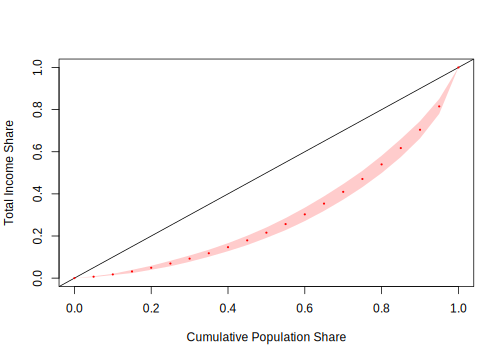

4.4 Estimación del coeficiente de Ginni en encuestas de hogares
Para iniciar esta sección tengamos en cuenta la siguiente reflexión: Definir lo justo siempre será difícil y es algo a lo que quizá sea poco realista aspirar a conseguir. Sin embargo si estamos un poco más conscientes de cómo la desigualdad afecta nuestra libertad y cómo se refleja en el bienestar y calidad de vida de las personas, podremos poner en contexto una discusión que tendremos cada vez más presente en el mundo y en el país.
La desigualdad en todos los aspectos es un problema más comunes en todos los países del mundo. Particularmente, la desigualdad económica es un problema que atañe a muchas instituciones internacionales como, por ejemplo, Naciones Unidas quien tiene este problema detectado en los Objetivos de Desarrollo Sostenibles (ODS, por sus siglas). Dado lo anterior, es clave poder medir la desigualdad económica de los hogares en los países y para esto, el indicador más utilizado es el coeficiente de Gini (CG). El valor del índice de Gini se encuentra entre 0 y 1. Un valor del coeficiente de Gini de \(G = 0\) indica perfecta igualdad en la distribución de la riqueza, con valores más grandes significa una desigualdad cada vez mayor en la distribución de la riqueza. Siguiendo la ecuación de estimación de Binder y Kovacevic (1995), un estimador del coeficiente de Gini es:
\[\begin{eqnarray*} \hat{G}\left(y\right) & = & \frac{2\times\sum_{h=1}^{H}\sum_{\alpha=1}^{a_{h}}\sum_{i=1}^{n_{h\alpha}}\omega_{h\alpha i}^{*}\hat{F}_{h\alpha i}y_{h\alpha i}-1}{\bar{y}_{\omega}} \end{eqnarray*}\]
Donde,
\(\omega_{h\alpha i}^{*}=\frac{\omega_{h\alpha i}}{\sum_{h=1}^{H}\sum_{\alpha=1}^{a_{h}}\sum_{i=1}^{n_{h\alpha}}\omega_{h\alpha i}}\).
\(\hat{F}_{h\alpha i}=\) La estimación de la CDF en el conglomerado \(\alpha\) en el estrato \(h\).
\(\bar{y}_{\omega}=\) La estimación del promedio.
Para calcular el índice de Gini y su varianza estimada en una encuesta de hogares, R tiene cargados los procedimientos en la librería convey. A continuación, se muestra la sintaxis de cómo se realiza la estimación del índice de Gini para los hogares en la base de ejemplo de este capítulo.
library(convey)
diseno_gini <- convey_prep(diseno)
svygini( ~Income, design = diseno_gini) %>%
data.frame()## gini Income
## Income 0.4132757 0.0186633En primer lugar, se carga el diseño de muestreo con la función convey_prep. Luego, se estima el índice Gini con la función svygini. En los argumentos de esta última función se introducen la variable ingresos y el diseño muestral complejo.
Por otro lado, si el interés ahora es estimar la curva de Lorenz. La cual, según Kovacevic, M. S. et. al (1997) para una distribución dada de ingresos, traza el porcentaje acumulado de la población (desplegado desde el más pobre hasta el más rico) frente a su participación en el ingreso total. El área entre la curva de Lorenz y la línea de 45 grados se conoce como el área de Lorenz. El índice de Gini es igual al doble del área de Lorenz. Una población con la curva de Lorenz más cerca de la línea de 45 grados tiene una distribución de ingresos más equitativa. Si todos los ingresos son iguales, la curva de Lorenz degenera a la línea de 45 grados.
Para realizar la curva de Lorenz en R se utiliza la función svylorenz. A continuación, se muestran los códigos computacionales para realizar la curva de Lorenz para los ingresos:
library(convey)
svylorenz(formula = ~Income,
design = diseno_gini,
quantiles = seq(0,1,.05),
alpha = .01 )
## lorenz SE
## L(0) 0.0000000 0.0000
## L(0.05) 0.0068191 0.0008
## L(0.1) 0.0175964 0.0013
## L(0.15) 0.0316596 0.0033
## L(0.2) 0.0492230 0.0041
## L(0.25) 0.0694365 0.0056
## L(0.3) 0.0925871 0.0064
## L(0.35) 0.1181331 0.0071
## L(0.4) 0.1469261 0.0082
## L(0.45) 0.1791978 0.0095
## L(0.5) 0.2158231 0.0106
## L(0.55) 0.2565784 0.0123
## L(0.6) 0.3027002 0.0137
## L(0.65) 0.3537989 0.0149
## L(0.7) 0.4096304 0.0159
## L(0.75) 0.4706565 0.0167
## L(0.8) 0.5398749 0.0177
## L(0.85) 0.6174169 0.0183
## L(0.9) 0.7042464 0.0176
## L(0.95) 0.8151774 0.0152
## L(1) 1.0000000 0.0000Los argumentos que requiere la función son, inicialmente, los ingresos de los hogares y el diseño muestral complejo. Adicionalmente, se definen una secuencia de probabilidades que define la suma de los cuantiles a calcular (quantiles) y por último, un número que especifica el nivel de confianza para el gráfico (alpha).